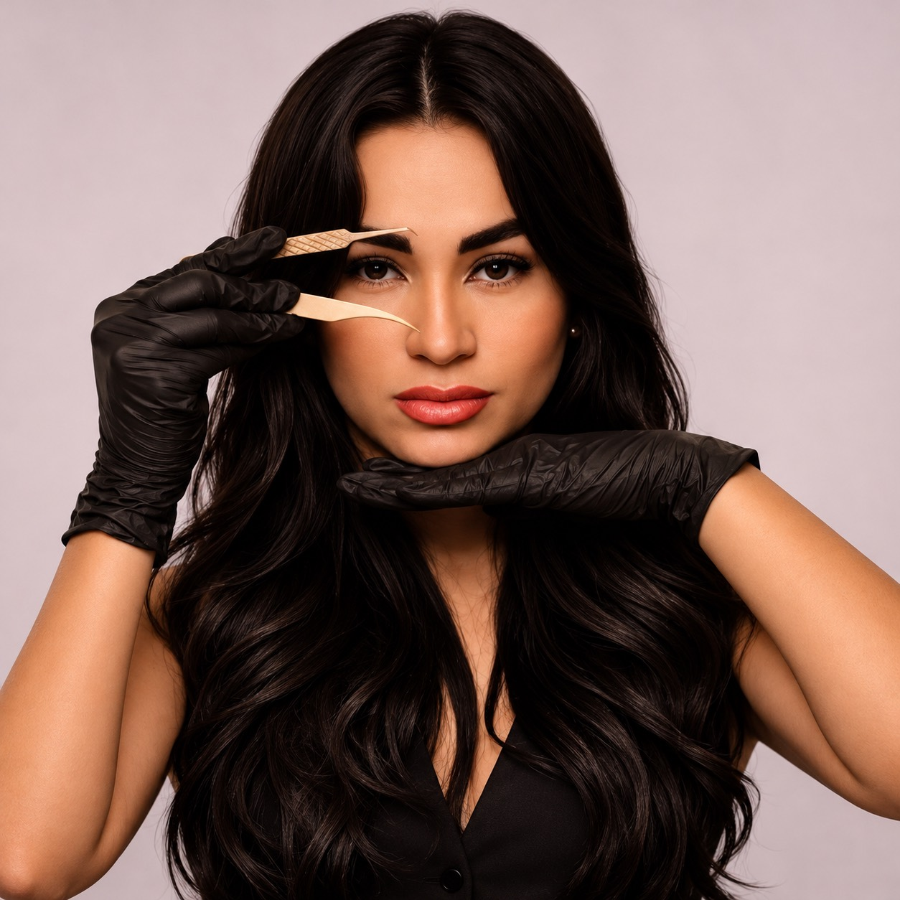

Natural & delicado
Volume egípcio 3D
Alongamento e definição com leveza, para quem busca valorizar o olhar com um efeito natural.
Quero esse efeito ↗Beleza, técnica e naturalidade em cada olhar. Sou Thays Araújo, lash designer, brow artist e educadora. Minha missão é realçar olhares e devolver autoestima.
Explore os olhares ↗
Determinação, sonhos e cuidado com cada pessoa que passa pelo meu caminho.
Meu dia a dia no Instagram ↗Antes de ser dona do meu próprio estúdio, já fui babá, atendente e gerente. Hoje, como lash designer, brow artist e educadora, encontrei na beleza uma forma de realçar olhares e ajudar outras mulheres a se sentirem bem consigo mesmas.
Sou mãe de dois, casada e cristã. A família é parte essencial da minha vida, e a fé acompanha meus passos. Sou movida por desafios, cheia de metas e sonhos, e acredito em ser 1% melhor a cada dia.
Fora do estúdio, amo treinar e estar com a minha família. Adoro praia, mas confesso: prefiro uma piscina! É com esse jeito leve, divertido e determinado que recebo cada nova história.
Atendimento em Rio das Pedras · Rio de Janeiro
Escolha um efeito para ver os detalhes. Nos cards com mais de uma foto, use as setas para explorar os resultados.
Alongamento e definição com leveza, para quem busca valorizar o olhar com um efeito natural.
Quero esse efeito ↗Fios leves e bem distribuídos, com mais densidade que o egípcio e volume na medida certa. Um olhar definido sem perder a naturalidade.
Quero esse efeito ↗Cílios cheios com volume suave: um efeito sofisticado e marcante, com aplicação que respeita a saúde dos fios naturais.
Quero esse efeito ↗Para quem ama cílios bem cheios: um efeito poderoso, volumoso e bem preenchido. Também apresentado como volume inglês 5D no catálogo.
Quero esse efeito ↗Alongamento do olhar com a sensação de delineado de maquiagem, criado com extensões de cílios.
Quero esse efeito ↗Alonga e levanta o olhar, com fios mais longos nas extremidades externas para criar o efeito felino.
Quero esse efeito ↗Sobrancelhas alinhadas e volumosas, com delicadeza. Durabilidade indicada no catálogo de 30 dias; inclui gel para os cuidados após o procedimento. Consulte as opções com henna ou tintura.
Quero esse efeito ↗Descrições conforme o catálogo da Thays Araújo. A técnica é escolhida após avaliação dos fios naturais.
Design de sobrancelhas, brow lamination e cuidados para completar seu momento. Os procedimentos de sobrancelhas duram de 30 minutos a 1 hora, conforme a técnica.
Conversar com a Thays ↗Valoriza o olhar respeitando a natureza e a proporção de cada rosto. Epilação com cera quente ou fria, gilete ou pinça.
Design personalizado com aplicação de henna. Durabilidade indicada no catálogo: de 8 a 15 dias na pele, conforme o tipo de pele.
Sobrancelhas alinhadas e volumosas, com delicadeza. Durabilidade indicada de 30 dias; inclui gel para os cuidados após o procedimento.
Cílios inferiores · Remoção de cílios · Depilação de meia perna, axila e buço · SPA labial
Cursos de cílios: consulte turmas e informações pelo WhatsApp.
Pequenos hábitos fazem parte da rotina de quem usa extensões. Siga sempre as orientações da profissional que realizou o procedimento.
Compartilhe suas referências e o efeito que deseja. A Thays avalia seus fios naturais para indicar uma aplicação adequada. Reserve de 1h30 a 2 horas para as extensões; com sobrancelhas, o atendimento pode chegar a 3 horas.
Evite puxar ou esfregar os fios. Faça a higienização com os produtos e a frequência indicados pela sua profissional.
Conforme o catálogo, a manutenção deve ser feita entre 15 e 20 dias, com pelo menos 40% das extensões ainda na raiz. Após 20 dias ou com retenção insuficiente, é cobrada uma nova aplicação. A Thays avalia a retenção no atendimento.
Procure uma profissional para a remoção. Não puxe as extensões nem tente removê-las com receitas caseiras.
Converse comigo para escolher sua técnica, agendar um atendimento ou saber mais sobre os cursos.
Agendar pelo WhatsApp ↗